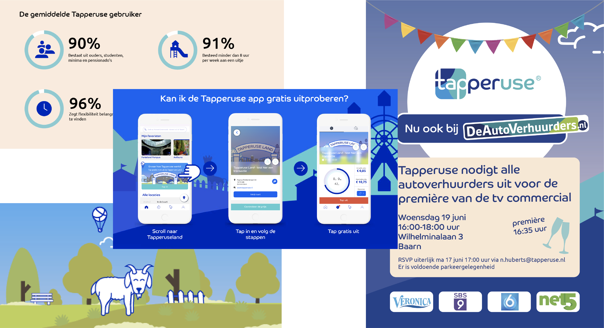

Internships
Notice Branded Media
I started my internship as UX Designer on the end of August in 2020 to February of 2021. During my internship I experienced different tasks like: A whole making of a new UX Design, researching, animations, Clips and sounds, Visual Design and much more. My main assignment was to make a better UX for their current product: The Company Locator. The Company Locator helps the user when entering a building, to show where their appointment is and how to get there. My task was to redesign the interface and remake the visuals. To complete this assignments I had to do a lot of research, make many concepts, get as much feedback as possible and testing it out. In the end, the product was a success!

Tapperuse
I started my internship as Designer on March in 2019 to June of 2019. During my internship my tasks mainly focused on visual research, visual design, coming up and helping with new ux design ideas and keeping track of the website.
